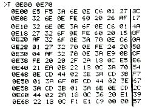

Nascom Journal |
4/80 |
Einsprungadresse: 0E00
Laufende Zeit:
0E6E: sek
0E6F: min
0E70: std
| GETFLG: |
0BE9 Ist diese Speicherstelle verschieden von 20H, wird die aktuelle Zeit nicht eingeschrieben. Sinn: Flag für andere Tasks, um die zu lesende Uhrzeit nicht verfälschen. Wird wieder 20H eingetragen, läuft Uhr normal weiter (ohne Zeitverlust !). |

R. Böttchers
Im Nascom Journal 3/80 machte jemand den Vorschlag, das Videosignal zu invertieren, um eine Revers-Darstellung zu ermöglichen (schwarze Schrift auf hellem Untergrund). Dieser Vorschlag hat jedoch 2 Nachteile:
Um den 1. Nachteil zu umgehen, müßte man nur den Schalter durch einen Ausgabeport ersetzen (z.B. Port 0, Q2).
Beim 2. Punkt wird es schon schwieriger: Wie bekannt, ist jede Stelle des Bildschirms durch einen Speicherplatz im Video-RAM vertreten. Es werden aber nur 7 der 8 Bits für die Aufbereitung der Zeichen benötigt, das 8. Bit kann also für eine Revers-Darstellung einzelner Zeichen herangezogen werden. Dazu muß man zunächst eine Verbindung von IC 20, Pin 12 zu IC 17, Pin 18 herstellen (auf der Rückseite des Nascom). Das Signal steht nun an IC 17, Pin 19 zur Verfügung. Es ist aber genau eine Stelle zu früh vorhanden, deshalb muß es noch durch ein D- Flip-Flop verzögert werden. Danach steht es endgültig für die Revers-Darstellung zur Verfügung (siehe Zeichnung) .
Beim Aufbau der Schaltung geht man wie folgt vor: Alle Pins der ICs (7486 und 7474) werden waagerecht gebogen, außer jeweils Pin 7 und 14. Dann wird das IC 7486 unter IC 11 mit Pin 7 an Pin 7 und Pin 14 an Pin 14 gelötet, ebenfalls das IC 7474 unter IC 10 (auf der Rückseite des Nascom). Achtung: Die ICs müssen um ca. 45° gedreht werden, sie zeigen mit ihrer Längsachse etwa dorthin wo sich auf der Vorderseite IC 48 befindet. Nun wird die Verbindung von IC 15, Pin 9 zu IC 11, Pin 10/11 unterbrochen (das ist die Leiterbahn, die auf der Rückseite zwischen Pin 5 und 6 von IC 31 verläuft) Jetzt werden die Verbindungen laut Zeichnung mit Draht hergestellt. Um an Pin 10/11 von IC 11 heranzukommen, kann man die Durchkon-taktierung, die sich direkt unter den Pins 9 und 10 von IC 31 befindet, verwenden. Alle diese Arbeiten müssen mit größter Sorgfalt durchgeführt werden, und vor dem Einschalten sollte alles genau kontrolliert werden. Der kleinste Fehler kann sehr schlimme Folgen haben.
Der Bildschirm kann nun direkt mit
MC00 nl 0C00 00 04 . nl
oder im Programm mit dem Unterprogramm
reversiert werden. Sollen einzelne Zeichen revers dargestellt werden, so muß vor der Ausgabe der Wert 80H addiert werden. Ein Beispiel:
Es lassen sich nun recht eindrucksvolle
| Seite 8 von 20 |
|---|